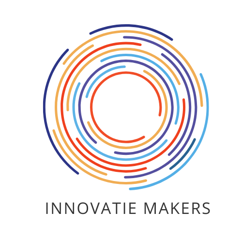

Innovatiemakers B.V.
Beste Willeke,
In verband met het sollicitatieproces vragen we om een Verklaring Omtrent Gedrag (VOG). Volg onderstaande stappen om deze aan te leveren.
Stap 1
Ga naar eutw.nl/wallet op je mobiele telefoon om de wallet de openen.
Scan onderstaande QR code om je machtiging en details voor de VOG aanvraag op te halen die je erna kunt delen met Juust
Stap 2
Ga naar Juust om je digitale bewijs voor een Verklaring Omtrent Gedrag (VOG) op te halen.
Klik op deze link om naar de juiste pagina te gaan.Deze link opent in een nieuw venster zodat je later hier kunt terugkeren voor stap 2.
Stap 3
Zodra je het digitale bewijs van een Verklaring Omtrent Gedrag (VOG) hebt opgehaald, kun je met je wallet onderstaande QR-code scannen om de VOG te delen met ons.